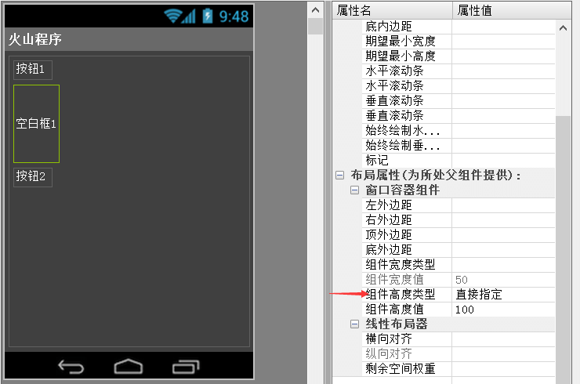
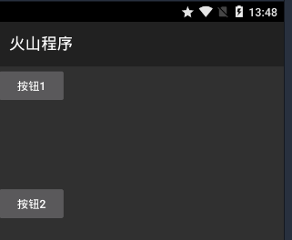

作者：创世魂
● 准备工作
打开窗口设计器，从上到下依次拖放“按钮1”，“空白框1”和“按钮2”。
然后设置“空白框1”的宽度类型为“直接指定”，指定100 DP的高度。
设置完毕后保存布局即可。
注意：本类位于“安卓基本类”模块中，必须添加此模块才能使用。

运行结果如下图：
“按钮1”和“按钮2”中间的距离为100 DP。
“空白框”组件可以理解为一个“隐藏的组件”，可用于给组件之间设置间距。
注意：部分手机因像素密度不同，实际物理尺寸可能和教程展示效果略有不同。
